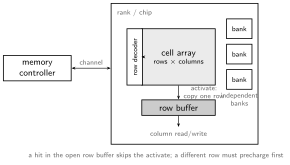

Caches and Virtual Memory treats main memory as the slow tier a miss falls through to. This note opens that box. Main memory is DRAM, and every awkward property it has (refresh, variable latency, scheduling, RowHammer) traces to one design decision: the bit is charge on a leaky capacitor. Below DRAM sits flash, whose own physics (charge trapped on a floating gate) shapes an entire firmware layer built to hide it.
| SRAM (caches) | DRAM (main memory) | |
|---|---|---|
| cell | 6 transistors, bistable | 1 transistor + 1 capacitor; the charge is the bit |
| density | low | high: why main memory is DRAM |
| speed | sub-ns | tens of ns: tiny analog signals must be sensed |
| retention | holds while powered | leaks; must be refreshed (the “dynamic”) |
A cell’s capacitor is far too small to drive an output directly, so a bank reads an entire row at once: ACTIVATE dumps the row’s charge onto the bitlines, where sense amplifiers detect and latch it, draining the capacitors in the process. The sense amps write the row back as part of activation, so every DRAM read is a read-and-restore cycle, and the same mechanism, run on a timer, is refresh.
DRAM is a hierarchy, each level exposing parallelism or amortizing cost:

| Level | Role |
|---|---|
| channel | independent bus + controller; channels run fully in parallel |
| rank | chips ganged to supply one cache line per access |
| bank | independent array within a rank; bank-level parallelism hides latency |
| row (page) | a few KiB read into the row buffer by one ACTIVATE |
| column | the cache-line slice a READ/WRITE actually moves |
Three commands drive a bank: ACTIVATE (open a row into the row buffer), READ/WRITE (move a column), PRECHARGE (close the row so another can open). Latency depends entirely on the row buffer’s state:
| Case | Commands needed | Latency |
|---|---|---|
| row hit | READ | fast |
| row empty | ACTIVATE, READ | medium |
| row conflict | PRECHARGE, ACTIVATE, READ | slow |
It is a cache hit/miss one level down: the same address stream can see wildly different latency depending on row locality (streaming ~96% row hits; random ~3%). After each access the controller bets: open-page policy keeps the row latched (wins on locality, pays the conflict), closed-page precharges immediately, adaptive policies predict per bank.
Capacity per dollar is what sells DRAM, so the cell and its sensing are optimized for density, not speed, and the analog activate-sense-restore sequence (~15 ns) barely budges across generations. What does scale is everything around the cell: more banks, more channels, faster interfaces. DRAM’s answer to the memory wall is parallelism and bandwidth, never latency, which is why the core’s answer is tolerance: out-of-order execution, MSHRs, prefetching, and multithreading all exist to overlap the latency nobody can shrink.
The controller turns cache-miss streams into legal command sequences under dozens of timing constraints, and it schedules: from a buffer of pending requests, FR-FCFS issues ready row-hit commands first, oldest first among them, opening new rows only when no hits remain. Throughput-optimal, but a fairness hazard: a streaming thread’s row hits keep jumping the queue and can starve a random-access neighbor: the memory-side twin of the LLC partitioning problem, and the reason fairness-aware schedulers exist.
The controller also chooses how address bits map to channel/rank/bank/row. The two goods are in tension: consecutive addresses in the same row maximize row hits, consecutive addresses across banks maximize parallelism. Real mappings (XOR-based bank hashes) balance the two and break pathological strides.
Refresh is the standing tax: every row within the retention window (64 ms), stealing bandwidth and burning idle power, with overhead growing as chips get denser. The window is set by the worst cell on the chip; most cells could go far longer, motivating retention-aware schemes, complicated by cells that randomly flip between strong and weak retention states.
Repeatedly activating one row (the aggressor) before the next refresh drains charge from physically adjacent victim rows through cell-to-cell coupling, flipping bits in memory the attacker never touched (Kim et al., ISCA 2014). Most commodity DRAM tested was vulnerable, and denser DRAM is more vulnerable: the scaling that makes memory cheap strengthens exactly the coupling that breaks it.
A bit flip an attacker can induce on demand in memory they don’t own is a security primitive, not a glitch: flip a page-table bit and userspace gains write access to the kernel; demonstrated from JavaScript and across cloud VMs. Mitigations have been a cat-and-mouse decade: extra refresh, then Target Row Refresh (defeated by many-sided hammering patterns that overflow its tracking tables), now per-row activation counting (PRAC) in the DDR5 standard. The lesson matches OpenTitan’s threat model: the analog layer is part of the attack surface.
DRAM’s interface scales where its cell cannot. DDR transfers on both clock edges in bursts of a full cache line; each generation (DDR3 → DDR4 → DDR5) roughly doubles transfer rate and adds banks. LPDDR trades bandwidth for energy; GDDR the reverse. HBM stacks DRAM dies on the package and connects them with thousands of through-silicon vias: an interface ~10x wider at modest clock, feeding the bandwidth-bound accelerators and GPUs. Achieved bandwidth still depends on the request stream keeping many banks busy: the memory-level parallelism that MSHRs exist to generate.
Storage is now NAND flash: charge trapped on an insulated floating gate, shifting the transistor’s threshold voltage: non-volatile, and readable as one of several charge bands. Bits per cell is a density-versus-margin trade: SLC (2 levels) through QLC (16 levels) buys 4x density while shrinking noise margins, cutting speed and endurance, the same slicing trade as quantization in Deep Learning Accelerators.
Flash reads and programs at page granularity (4-16 KiB) but erases only whole blocks (hundreds of pages), and a page can only be programmed after its block is erased. In-place overwrite is impossible: changing data means writing a fresh page elsewhere and abandoning the old one. Everything below exists because of this one asymmetry.
The FTL (flash translation layer), firmware on the drive’s own controller, maintains the fiction of overwritable logical blocks:
Flash also has DRAM’s analog failure modes in its own dialect: read disturb (reading one page nudges its block-mates: flash’s RowHammer), long-term retention loss, and wear-driven error rates. SSDs therefore run ECC far stronger than DRAM’s on every read: raw flash is expected to return bit errors, and the code is what turns a noisy analog device into the clean block abstraction the OS sees.
Author: Sai Govardhan (saigov14@gmail.com)
Courses
Textbooks
Standards, Papers, and Wikipedia
MIT License
Copyright (c) 2025 Sai Govardhan (saigov14@gmail.com)
Permission is hereby granted, free of charge, to any person obtaining a copy
of this software and associated documentation files (the "Software"), to deal
in the Software without restriction, including without limitation the rights
to use, copy, modify, merge, publish, distribute, sublicense, and/or sell
copies of the Software, and to permit persons to whom the Software is
furnished to do so, subject to the following conditions:
The above copyright notice and this permission notice shall be included in all
copies or substantial portions of the Software.
THE SOFTWARE IS PROVIDED "AS IS", WITHOUT WARRANTY OF ANY KIND, EXPRESS OR
IMPLIED, INCLUDING BUT NOT LIMITED TO THE WARRANTIES OF MERCHANTABILITY,
FITNESS FOR A PARTICULAR PURPOSE AND NONINFRINGEMENT. IN NO EVENT SHALL THE
AUTHORS OR COPYRIGHT HOLDERS BE LIABLE FOR ANY CLAIM, DAMAGES OR OTHER
LIABILITY, WHETHER IN AN ACTION OF CONTRACT, TORT OR OTHERWISE, ARISING FROM,
OUT OF OR IN CONNECTION WITH THE SOFTWARE OR THE USE OR OTHER DEALINGS IN THE
SOFTWARE.